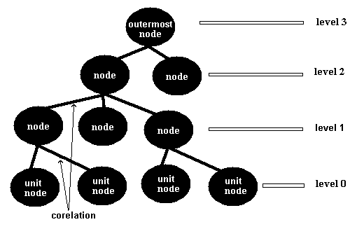
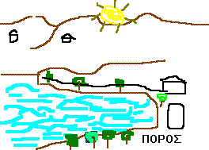

overview of core.nfo

#img.ep-hierarchy.bmp#
Το κύριο|βασικό εννοιακό-μοντέλο (\FolioViews)
EPISTEM.NFO είναι μια FOLIO-VIEWS-3.01-SCS#cptIt417# με ΘΕΜΑ το ΣΥΜΠΑΝ.
[hmnSngo.1995.03_nikos]

#ep-1-askeli.bmp#

#img.it-1-askeli.bmp#
Α) ΑΝΑΛΥΤΙΚΟ-διαβασμα#cptCore92#
Β) ΣΥΝΘΕΤΙΚΟ διαβασμα
Γ) ΤΥΧΑΙΟ διαβασμα: F2 & _name
Σε αντικείμενα-3 πρώτα ελληνικά και μετά αγγλικά μικρά.
_GENERIC:
* FOLIO VIEWS 3.01 INFOBASE#cptItsoft929#
bsMgr#cptIt356#:
Με αυτά έφτιαξα συστήματα-δομημένων-εννοιών.
_FIELD:
BIBL: περιέχει πηγές παραπομπών.
YEAR: περιέχει χρονολογίες "ιστορικών πληροφοριών". (3,7).
_GROUP:
about infobase: αυτο εδώ το γκρουπ με πληροφορίες για τη συγκεκριμένη βάση πληροφοριών που έχει πρόσβαση απο το help system.
empty: περιέχει άδειες έννοιες, έτοιμες προς συμπλήρωση.
_STRUCTURE:
* numerically
* alphabetically
* timely
name::
* McsEngl.FvMcsCore!=Core-FolioViewMcsh,
* McsEngl.mivCORE,
* McsEngl.conceptCore,
* McsEngl.core.nfo,
* McsEngl.core-infobase,
* McsEngl.dirFolioView/FvMcsCore,
* McsEngl.epistem-infobase,
* McsEngl.infobase.core,
* McsEngl.infobase.epistem,
====== langoGreek:
* McsElln.μοντελοΕπιστημη,
DOCTRINES/DICTUMES/APHORISMS:
_MINE:
* "rules without rulers"
[Antonopoulos cup, {2021-03-06}]
* “If we can’t live together … then we are going to die alone”.
["Lost"]
* "You are free to say what ever you want, but you are not free of the consequences of your speech".
[{2021-01-10} https://www.voice.com/post/@dan/freedom-of-speech-in-the-jungle-1610251566-1670614539]
* There is no God written definitions.
If you don't provide your own, what you say is ambigous.
{hmnSngo.2016-11-19}
* The HAVINGS last a lifelong, the BEINGS for ever.
Τα ΕΧΩ κρατάνε μια ζωή, τα ΕΙΜΑΙ για πάντα.
2014-08-17.
* The "DETAIL" is what makes a thing "good".
2001-12-02.
* Who is the evaluator is more important than his eval-uation.
2001-12-02.
* We MUST disagree, but we MUST understand each other.
2004-01-09.
=> I don't want you to AGREE#cptCore781# with me. First I want you to UNDERSTAND me.
[2008-08-28]
* The improvement of our LANGUAGE is ONE prerequisite for the improvement of our KNOWLEDGE.
2004-01-11.
* Δεν έχει νόημα να μιλάς σε αυτιά που δεν ακούνε.
2007-10-19.
* Because "known" is too small in relation to "unknown", All knowledge is open to criticism and not closed to falseness.
2008-01-07.
* Μή πετάς μαζί με τα απόνερα και το μωρό.
2008-01-07.
* KISS_principle ("Keep It Simple, Stupid").
2008-09-09.
* new-vision = planned_networked_economy (σχεδιασμένη_δικτυωμένη_οικονομία) = sosialism.
2008-10-19.
* new-vision = open_networked_planned_economy (ανοικτή_δικτυωμένη_σχεδιασμένη_οικονομία) = sosialism.
2008-11-16.
* Knowledge = comparison.
2010-02-21.
* FROM unregulated&ruthless("free")-market-economy TO open-networked-planned-market-economy.
- FROM unregulated&ruthless-market TO planned-market.
2010-06-24.
* ξεχώρισε τους ψεύτες από τους λανθάνοντες.
- Distinguish the LIARS from the ones who are WRONG.
2013-02-10.
* bad-names bad-thinking, clear-names clear-thinking.
2013-02-22.
* http://kainidiathiki.agiooros.org/index.php?id=4&bt=%CE%99%CF%89%CE%B1%CE%BD%CE%BD%CE%B7%CE%BD&ch=15#22:
εγώ ξεκαθάρισα από πριν τη θέση μου, προειδοποίησα για τη στάση μου - τώρα δεν έχω καμιά ευθύνη για ό,τι έγινε ή ό,τι θα γίνει.
* all are born and die.
* Τσίπρας - Μητσοτάκης, η άνοια και η παράνοια θέλουν να σώσουν την ελλάδα.
{2016-12-18}
_OTHERS:
* The universe is bigger than your view of the universe.
[{2021-08-13} https://twitter.com/ProfFeynman/status/1426055857154912262]
* "Keep your big goals away from small minds."
[{2021-06-23} https://twitter.com/ProfFeynman/status/1407556209306001410]
* [the general population dosen't know whats happening and it doesn't even know that it doesn't know ] Noam Chomsky @noamchomskyT
* "The best way to learn is to teach"
[https://twitter.com/ProfFeynman/status/1143563983879696384]
* "nothing in life is to be FEARD it is only to be UNDERSTOOD"
[Marie Curie {1867-1934}]
* To Live a Better Life, Think About Death
{Melody-Wilding, 2018-07-24, https://medium.com/s/futurehuman/to-live-a-better-life-think-about-death-430b973febd}
* cut off head to get rid of migraine.
* Necessity is the mother of invention.
{2018-06-13}
* stop talking and start doing.
{2018-05-24 https://twitter.com/UN/status/1003214712308424704}
* The greatest enemy of knowledge is not ignorance, it is the illusion of knowledge.—Stephen Hawking
{2018-05-24}
* “When the last tree is cut down, the last fish eaten, and the last stream poisoned, you will realize that you cannot eat money”?—?Alanis Obomsawin
{2018-05-18}
* As the old saying goes: first they ignore you, then they laugh at you, then they fight you, then you win.
{2018-05-17}
* The internet is communication. Blockchains are governance.
[https://medium.com/blockchannel/blockchain-is-governance-e0d827b97b3f]
* “The problem lies not so much in developing new ideas, but in escaping from old ones” John Maynard Keynes
{2018-03-04}
* Perfection is achieved, not when there is nothing more to add,
but when there is nothing left to take away.
[Antoine de Saint Exypery]
* Woe to you, scribes and Pharisees, hypocrites
[Matthew 23-13] 2014-03-19
* An economy based increasingly on rent extraction by the few and debt buildup by the many is a feudal model
Dirk Bezemer and Michael Hudson [http://evonomics.com/finance-is-not-the-economy-bezemer-hudson/ 3 September 2016]
* on a long enough timeline the survival rate for everyone drops to zero [http://awselb.zerohedge.com/]
* Συμβουλή σε έναν νεαρό, Διογένης ο Λαέρτιος 7.23.
Προς έναν φλύαρο νεαρό, «γι αυτό», είπε, ο Ζήνων, «έχουμε δύο αυτιά κι ένα στόμα, για ν ακούμε περισσότερα και να λέμε λιγότερα». {2016-10-03}
* Make it as simple as possible, but not simpler.
Albert Einstein [http://www.w3schools.com/w3css/default.asp]
* All it takes for evil to triump is that good man do nothing. -- Kofi Annan
[http://ball.askemos.org/Adc5dd0c30f6e63932811ed60e019bb2d/] 2014-03-27
* Ο κόσμος είναι σαν τον καθρέφτη, του χαμογελάς, σου χαμογελάει, του βγάζεις τη γλώσσα, σου τη βγάζει κι αυτοός. Μια γιαγιά [2016-03-05]
* ΟΧΙ στη δικτατορία-των-συνταγματαρχών, ΟΧΙ στη δημοκρατία-των-πολιτικών, ΝΑΙ στη ΔΗΜΟΚΡΑΤΙΑ-ΤΩΝ-ΠΟΛΙΤΩΝ. [2016-04-06]
*
Ισως
Δεν
Είναι
Αργα
===
* Education is the most powerful weapon you can use to change the world - Nelson Mandela
===
* ο ανώτερος άνθρωπος έχει απαιτήσεις απο τον εαυτό του. Ο κατώτερος, από τους άλλους. [jorge_de_arzado]
===
* Όλο ήθελες να παίρνεις και ποτέ δεν έδινες
ανθρωπάκι ήσουν πάντα κι ανθρωπάκι έμεινες [Διονύσης Τζεφρώνης] 2010-01-13
===
* «Οι Ηνωμένες Πολιτείες της Ευρώπης μέσα σε καπιταλιστικό καθεστώς, είτε είναι απραγματοποίητες, είτε είναι αντιδραστικές»(Λένιν)
[http://www.resaltomag.gr/forum/viewtopic.php?p=22683#22683] 2010-01-02
===
* Learn from the past. Live in the present. Plan for the future. [Eric Berry]
===
* It was Edison who said ‘1% inspiration, 99% perspiration’. That may have been true a hundred years ago. These days it's ‘0.01% inspiration, 99.99% perspiration’, and the inspiration is the easy p a r t. --Linus Torvalds
===
* 35. Το να γερνάς είναι καλύτερο από την εναλλακτική λύση: να πεθαίνεις νέος.
44. Η ζωή δεν είναι τυλιγμένη με κορδέλα, δεν παύει όμως να είναι δώρο.
[Regina Brett]
===
* "Those who would give up liberty to purchase safety, deserve neither liberty nor safety."
Benjamin Franklin
===
* Πλούσιος ειναι αυτος που αξίζει πολλά οχι αυτός που έχει πολλά.
===
* "Η ιστορία δεν είναι χρήσιμη επειδή διαβάζει κανείς εκεί το παρελθόν, αλλά επειδή διαβάζει το μέλλον".
Jean-Baptiste Say, 1767-1832 Γάλλος Οικονομολόγος
===
* Ο μεγαλύτερος εχθρός της γνώσης
δεν είναι η άγνοια
είναι η ψευδαίσθεση της γνώσης. Stephen Hawking.
===
* If you can't explain it simply, you don't understand it well enough.
[Albert Einstein] 2014-09-02
===
What is matter? Never mind!
What is mind? No matter! Albert Baez, 1967.
EVOLUTING
{time.2012}:
_2012-10-01:
230.766 εγγραφές.
_2012-04-04:
I changed the IDs from: concept.epistem111, cpt.epistem111, prt.epistem111, sgn.epistem111 to:
conceptCore111 and cptCore111.
_2012-03-25:
I merged and the "earth" cbs-infobase. In principle all my cbs in one file about 50 megabyte with 214.000 records.
_2012-03-22:
I merged "epistem" with "it" infobase. Total 177.000 records.
_2012-03-02:
I merged "epistem", "science" and "economy" in this infobase.
{time.2002}:
_2002-12-16:
* I changed the Jump-Destinations of definition FROM .1, .2 TO .a, .s AND the links that point to them.
This way I can add "internal-concepts" to each concept with id: object . infobase - number . 1 2 3 etc
{time.1995}:
_1995.03:
- Προσθέτω ανάλυση/σύνθεση χαρακτηριστικά στον ΟΡΙΣΜΟ.
- Πρόσθεσης συνδέσεων-θέσης στα χαρακτηριστικά.
- Χωρισμό της βάσης σε 2 αρχεία.
{time.1994}:
Δημιουργία, με μετατροπή της αντίστοιχης DOS βάσης.
Notation
_Concept's-name (rl3):
as in other places.
[hmnSngo.2012-04-29]
===
* attribute-concept: entity's-attribute
* specific-concept: generic-specific
[hmnSngo.2012-03-11]
===
notation: conceptMarx111
_ATTRIBUTE:
* brain'Animal#cptCore501.4: whole#: it is a whole-attribute of brain-concept.
[hmnSngo.2012-03-19]
(){}[]
Abbreviation
Consonant-abbreviation:
- use only the consonants of a word.
- if the word begins with vowel, then we hold it.
[hmnSngo.2011-04-17]
3-letter-abbreviation:
- usually the 3 first consonants if it is possible OR an important vowel in order connote the whole name.
===
- hmn (human)
- org (human-organization)
- prd (production)
- soc (human-society)
- sts (satisfier)
ABBREVIATION.SPECIFIC:
If the abbreviation denotes a specific-concept, then I use one capital-letter, otherwise the abbreviation denotes a term with more than one word.
* lagHmn = language.human
* cmplng = computer_language
[hmnSngo.2012-05-19]
Attribute#rl?: specificId(concept.xxx): genericId(cpt.yyy): attEnv|attWho|attPrt# 2012-03-22
notation.attribute.specific:
* use nouns, not adjective: sector. turist ===> sector. turism.
[hmnSngo.2012-06-11]
Name-of-concept
In generic, specific, whole etc places:
* not abbreviations. [hmnSngo.2012-04-30]
* ex: society.human.greece#cptCore18#
* ex: science.economics#cptEconomy323.32#
Symbol
#:
# = ότι περικλειεται σε αυτά είναι ΚΡΥΦΟ κείμενο,
$ = δίεση στη μουσική